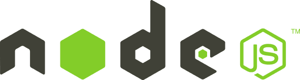
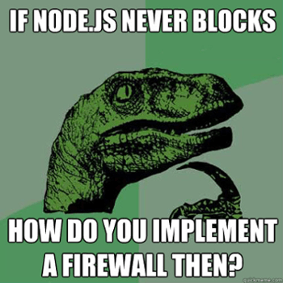
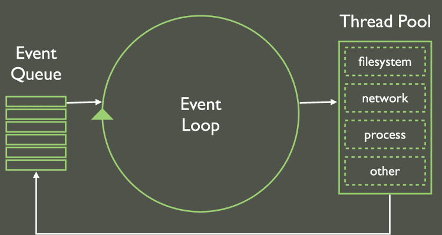

NodeJS
Cómo usar JavaScript en todos lados
Nicolás Quiroz / @_nhsz
Hola!
Voy a hablar un poco sobre

Historia
¿Qué es Node?
Un poco de código
Breve repaso histórico
Mayo de 2009: NodeJS es creado por Ryan Dahl código de V8 .
- Due to the internal conflict over Joyent's governance, io.js was created as an open governance alternative with a separate technical committee.
Enero de 2010: Nace npm
Julio de 2011: Primer release para Windows.
Enero de 2012: Ryan da un paso al costado. Isaac Schlueter npm
Enero de 2014: Timothy J. Fontaine toma el lugar de Isaac.
Diciembre de 2014: Fedor Indutny lanzó io.js
Febrero de 2015: Se comienza a discutir la necesidad de formar una fundación neutral para NodeJS .
Junio de 2015: Las comunidades de NodeJS e io.js deciden trabajar juntas y nace la NodeJS Foundation.
Septiembre 2015: NodeJS v0.12 e io.js v3.3 se fusionan en Node v4.0 . Esta release incluyó soporte para features de ES6 y dió inicio al ciclo de lanzamientos LTS .
In Node.js the stable versions with long-term support (LTS) are the ones starting with even numbers (4, 6, 8 ...) and the experimental version are the odd numbers (5, 7 ...). We recommend you to use the LTS version in production and try out new things with the experimental one.
¿Qué es NodeJS?
No es un lenguaje nuevo.
No es un framework.
No es una librería biblioteca de JavaScript.
Según la web oficial (https://nodejs.org/es/ )
NodeJS® es un entorno de ejecución para JavaScript , construido con el motor de JavaScript V8 de Chrome.
Utiliza un modelo de operaciones E/S sin bloqueo y orientado a eventos , que lo hace liviano y eficiente.
El ecosistema de paquetes de NodeJS, npm , es el ecosistema mas grande de bibliotecas de código abierto en el mundo.
JavaScript Runtime Environment
Entorno de ejecución .
Antes, JavaScript sólo podía ejecutarse del lado del cliente.
Es el único lenguaje que puede utilizarse en todo el stack.
V8 JavaScript engine
Intérprete/compilador de JavaScript que utiliza Chrome.
Compila JavaScript a código de máquina nativo .
- El aumento de velocidad es importante debido a que V8 compila JavaScript en código de máquina nativo, en lugar de interpretarlo o ejecutarlo como bytecode.
Event-driven
Basado en eventos .
La ejecución del código se realiza de forma asincrónica.
Node.js works in this same asynchronous way. It uses a function called the Event Loop that ensures that data isn’t constantly being queried for, but simply transmitted when it exists. It’s kind of like a holding cell for communication. So while the Event Loop is handling asynchronous tasks, Node,js can continue running the program normally and leave out the heavy lifting. It makes Node.js very good at idling when there’s nothing to do, instead of constantly querying for more information.
This means that developers can use Node.js to build applications that scale to millions of users. Real time communication is managed by the event loop without taking up much memory, so developers can spend more time working on the functionality of the app than they might spend worrying about the app getting clogged with too many queries.
- El enfoque tradicional para generar código asíncronico es engorroso y crea un espacio en memoria no trivial para un gran número de clientes (cada cliente genera un hilo, y el uso de memoria de cada uno se suma).
- Para evitar esta ineficiencia, así como la dificultad conocida de las aplicaciones basadas en hilos, NodeJS mantiene un Event Loop que gestiona todas las operaciones asíncronas.
- Cuando una aplicación NodeJS necesita realizar una operación de bloqueo (operaciones I/O como trabajo con archivos) envía una tarea asíncrona al event loop, junto con un callback, y luego continúa.
- Node resuelve este problema cambiando la forma en que se realiza una conexión con el servidor.
- En lugar de generar un nuevo hilo de OS para cada conexión (y de asignarle la memoria acompañante), cada conexión dispara una ejecución de evento dentro del proceso del motor de Node.
- Node también afirma que nunca se quedará en punto muerto, porque no se permiten bloqueos y porque no se bloquea directamente para llamados E/S.
Non-blocking I/O
Las operaciones de I/O (abrir/cerrar/leer/escribir archivos, etc)
no son bloqueantes .

Single-threaded
Corre en un único hilo de ejecución .
Event Loop

A typical experience at a restaurant would be something like this:
You sit at a table and the server grabs your drink order.
The server goes back to the bar and passes your order to a bartender.
While the bartender is working on your drink, the server moves on to grab another table’s drink order.
The server goes back to the bar and passes along the other table’s order.
Before the server brings back your drinks, you order some food.
Server passes your food order to the kitchen.
Your drinks are ready now, so the server picks them up and brings them back to your table.
The other table’s drinks are ready, so the server picks them up and takes them to the other table.
Finally your food is ready, so server picks it up and brings it back to your table.
Basically every interaction with the server follows the same pattern. First, you order something. Then, the server goes on to process your order and return it to you when it’s ready.
Once the order is handed off to the bar or kitchen, the server is free to get new orders or to deliver previous orders that are completed. Notice that at no point in time is the server doing more than one thing. They can only process one request at a time. This is how non-blocking Node.js applications work.
In Node, your application code is like a restaurant server processing orders, and the bar/kitchen is the operating system handling your I/O calls.
Your single-threaded JavaScript application is responsible for all the processing up to the moment it requires I/O. Then, it hands the work off to the operating system which takes care of processing the rest.
NPM
Node Package Manager . Permite publicar, compartir código y manejar
dependencias.
Simplifica la instalación, actualización y desinstalación de módulos.
Consejos para elegir modulos: fijarse que sean populares, que se actualicen seguido, invesgitar GitHub (stars, followers, actividad)
Yarn
Estas características hacen que Node sea ideal para aplicaciones web
de alta performance, distribuídas, altamente escalables y en tiempo real .
In the old days, the Internet used to be about consumption.
Users would passively read, watch and download content. Chat was done on message boards or blogs, not in real time.
But as social media has increased in popularity, today’s users want to be able to receive instantaneous feedback over the Web.
Chatting, gaming and collaboration now take place in real time.
Even more significantly, this is happening on an imposing scale with up to millions of users interacting on one site at one time.
Software developers know the Web wasn’t built for this.
Real-time response means that each users’ client would be constantly querying the server, making for sluggish, inefficient response times.
To make the Web responsive, communications can’t start from the client side.
Instead, servers need to push data to clients instead, and only when there is data to push.
If they’re constantly pushing data, it’ll be an equally tedious process.
See also: Wait, What’s Node.js Good For Again?
This is what Node.js does. Node.js runs JavaScript by leveraging V8, Google’s fast JavaScript engine designed for Chrome.
This allows Node.js to create a runtime environment that pushes JavaScript from the server to the client quickly.
V8 translates JavaScript into native machine language, instead of working overtime to interpret it as bytecode, giving Node.js its speed.
This speed, combined with asynchronous programming, are the twin powerhouses that make Node.js so responsive.
Ryan Dahl, inventor of Node.js, said he was first inspired to create the framework in 2009 after watching a loading bar on Flickr.
The site kept querying the server in order to display how much had downloaded.
Dahl thought it’d be faster if the server pushed updates to the client without the client having to begin every query.
In other words, human communication isn’t like a programming language.
It happens chaotically, out of sync, and it isn’t parallel—I don’t have to wait for you to reply before I can talk again.
“Node.js is not a silver-bullet new platform that will dominate the web development world. Instead, it’s a platform that fills a particular need.
Where Node really shines is in building fast, scalable network applications.”
tl;dr
entorno de ejecución de JavaScript del lado del servidor.
Permite ejecutar código JavaScript fuera del browser .
¿JavaScript en todos lados?
Podemos correr NodeJS en cualquier
sistema donde sea posible instalar Linux .
Enough talk!
Let's code :)
Instalación: nvm
Node Version Manager . Permite instalar y administrar múltiples versiones.
Instalar nvm
nvm for windows https://github.com/coreybutler/nvm-windows
Verificar que nvm se instaló correctamente
$ command -v nvm
$ nvm
$ nvm --version
Instalar una versión específica
$ nvm install <node version>
Chequear que Node está instalado
$ node --version
Listar las versiones instaladas
$ nvm ls
Elegir qué version usar
$ nvm use <node version>
Desinstalar una versión específica
$ nvm uninstall <node version>
Nota 1:
Al instalar NodeJS , estamos también instalando NPM .
$ npm -v // Verificar que NPM se encuentre instalado
Nota 2:
Node incluye funcionalidad por defecto a través de su API
Ok, ya instalamos Node. ¿Y ahora?
Tenemos acceso a una interfaz REPL .
$ nodeYa podemos ejecutar JavaScript fuera del browser
objeto global:
browser - window
node - global
browser: tied to HTML document (document)
node: tied to process (process)
$ node
> console.log('Hola Node')
Hola Node
undefined
Ejemplo: chalk
$ npm install --save chalk
npm install --save chalk (--save para agregarlo al package json y mantenerlo actualizado)
NPM va a crear node_modules/ en el root de nuestro proyecto y cuando hagamos NPM install, va a leer el archivo package.json e instalar todas las dependencias necesarias (las que requerimos con require) para ejecutar el proyecto
con npm list puedo ver todas las dependencias instaladas en mi proyecto
// Obtengo una referencia a la librería var chalk = require('chalk');
// Configuro los colores var rojo = chalk.bold.red; var verde = chalk.bold.green;
// Uso los colores console.log(rojo('Un error ha ocurrido')); console.log(verde('Aqui puedo informar del resultado de una operacion'));
(ver API) chalk.green(Acamica); chalk.blue(Node);
npm uninstall --save chalk para remover dependencias que ya no utilizo
var chalk = require('chalk')
var redColor = chalk.red.bold
var greenColor = chalk.green.bold
console.log(redColor('ERROR!'))
console.log(greenColor('Todo OK :)'))
var http = require('http')
http.createServer(function (request, response) {
response.writeHead(200, {'Content-Type': 'text/html'})
response.write('The server is running OK')
response.end()
}).listen(8888)